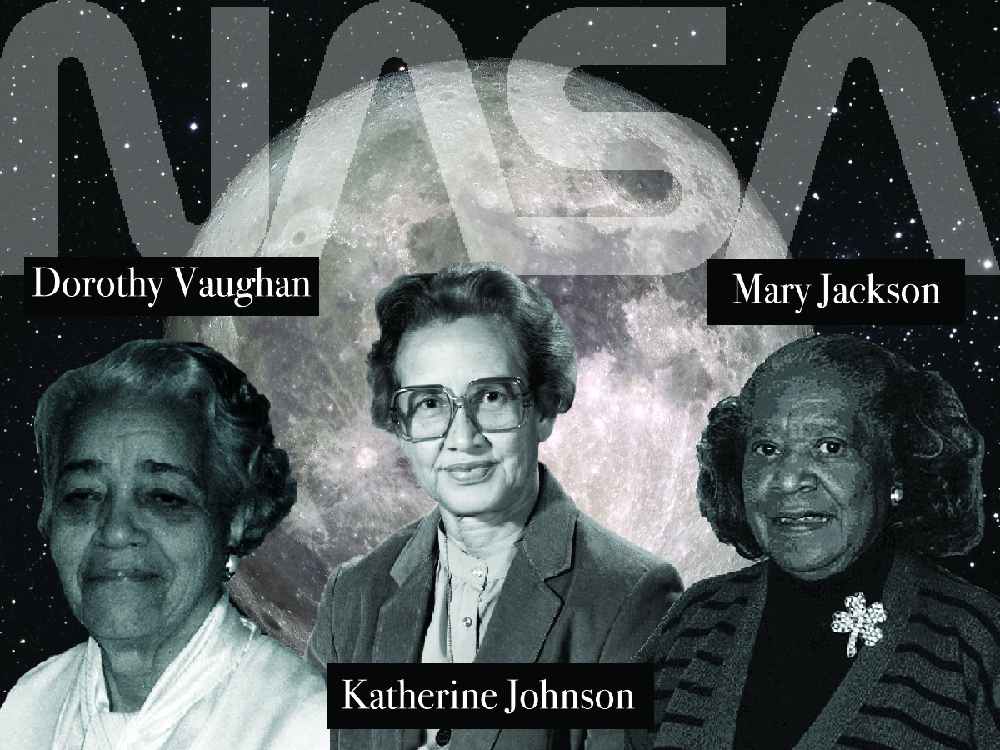
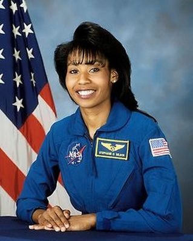
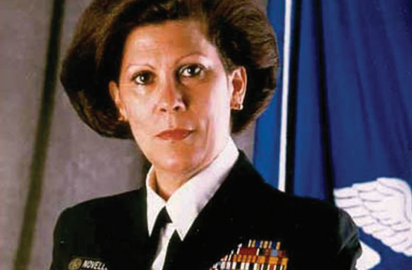
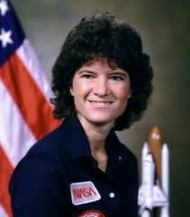

Katherine (Goble) Johnson, Dorothy Vaughn, Mary Jackson

Katherine (Goble) Johnson
Who:
Johnson, born in White Sulfur Springs, W.V., began high school when she was just 10 years old, graduating at 14 and going on to finish her B.S. in mathematics and French by the time she was 18 from West Virginia State University.
When:
She began working for the then National Advisory Committee for Aeronautics (NACA) — now NASA — in 1953, well before the modern computer existed. Johnson and the other women hired to measure and calculate wind tunnel test results "had the job title of 'computer' [and] during World War II, the NACA expanded this effort to include African-American women." Eventually, she actually made it possible for Alan Shepard and John Glenn to go to space.
Dorothy Vaughn
Who:
Born in 1910 in Kansas City, Missouri, Vaughan graduated at 19-years-old from Wilberforce University — a college founded in 1865 as "one of the destination points of [the] railroad" when the Ohio Underground Railroad was established.
When:
Vaughan began her work in 1943 before eventually being "moved into the area of electronic computing when the first (non-human) computers were introduced at NACA."
Mary Jackson
Who:
Jackson grew up in Hampton, Va., where she was born in 1921, receiving her Bachelor's degrees in 1942 in both physical science and mathematics from the Hampton Institute.
When:
By 1950, she "began work as research mathematician at NACA's Langley Memorial Research Center" and was eventually "assigned to work directly with the flight test engineers."
Mae Jemison

Who:
Jemison was born in Decatur, Alabama, then moved to Chicago’s South Side at the age of 3. She graduated high school, and attended Stanford University.
When:
On June 4, 1987, became the first African-American woman to be admitted into NASA’s astronaut training program. On September 12, 1992, Jemison finally flew into space with six other astronauts aboard the Endeavour on mission STS47, becoming the first African-American woman in space. In recognition of her accomplishments, Jemison has received several awards and honorary doctorates.
Antonia Novello

Who:
Novello was born on August 24, 1994 in Fajardo, Puerto Rico, and stayed there until she recieved her doctor of medicine.
When:
She earned a doctor of medicine (M.D.) from the University of Puerto Rico before traveling to the United States to complete her medical training in nephrology — the study of kidneys — at the University of Michigan. Novello specialized in public health, pediatric AIDS, organ transplants and more throughout her medical career, which spanned more than three decades. She was appointed Surgeon General of the United States by President George Bush in 1990. She was the first woman — and the first person of Hispanic heritage — to hold that office.
Sally Ride

Who:
Born on May 26, 1951, Ride lived in Los Angeles, Ca, and stayed in the area most of her life.
When:
She attended Stanford where she double majored in English and physics, and then went on to earn a master's degree in physics in 1975 and a doctorate in 1978. Just after earning her doctorate, Ride beat out 1,000 applicants for a spot in NASA's astronaut program. As a mission specialist, she became — as you may recall — the first American woman to travel into space on June 18, 1983.